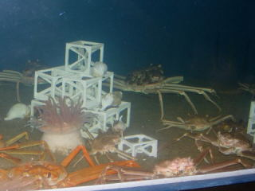
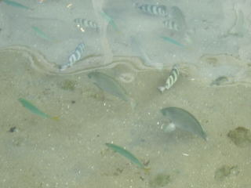

かにっこ館は小さな水族館ですが、無料なのでお得です。
2009/09/21
隣りの「新鮮市場かろいち」が大きい施設なので、気づかすに帰りそうになりました。市場の奥でちょっと目立たなかったです。 かにっこ館はカニメインの水族館なので色んな種類のカニが展示してありました。

そんなに大きい施設ではないですが、カニも魚もいるちょっとした水族館です。入館料が無料ですし、となりには市場もあるので鳥取観光のついでにいいかなと思いました。
屋外の池みたいな所には海水魚が泳いでました。

生簀のような水槽で見るより、浅めの池を上から見る方がより近くてリアルな感がしていいなと思いました。こうゆうのっていいですね。